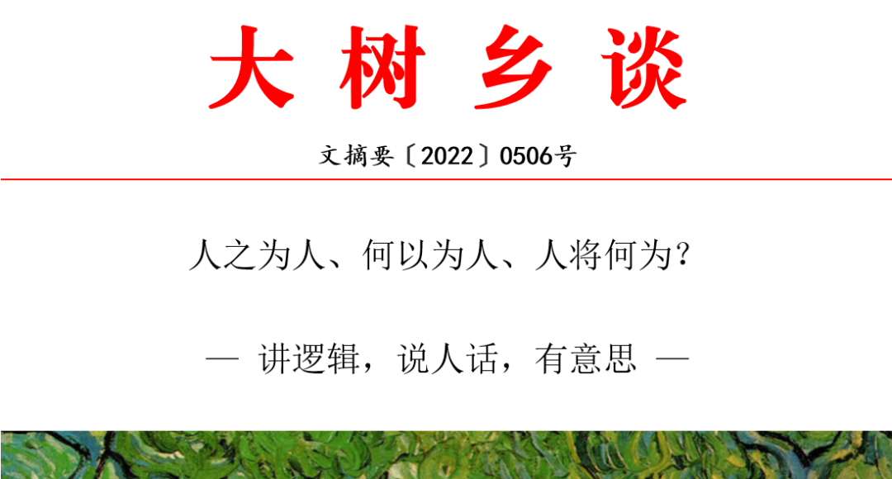
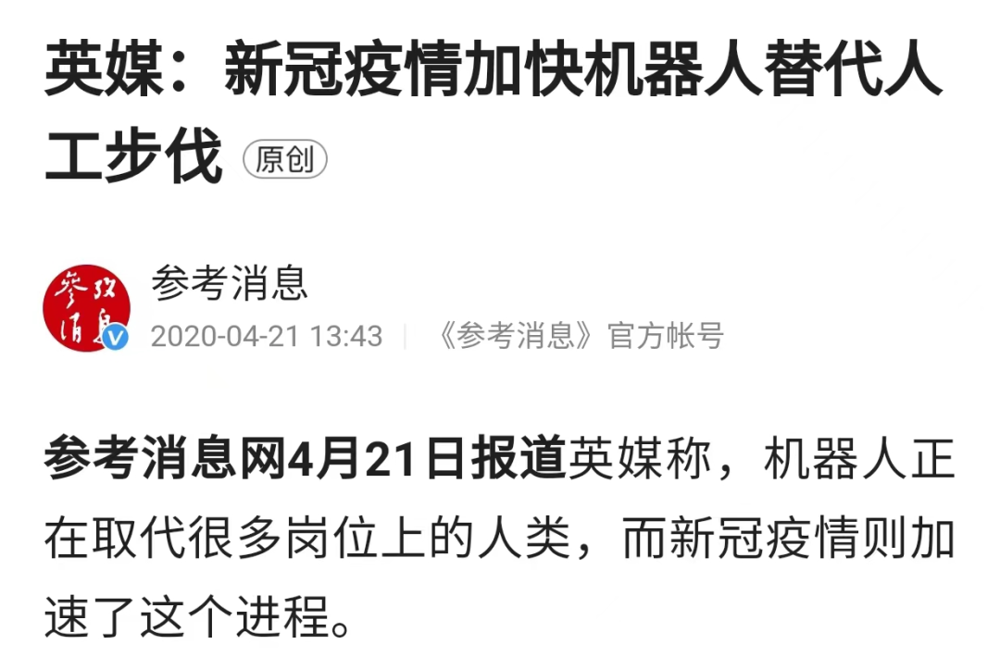
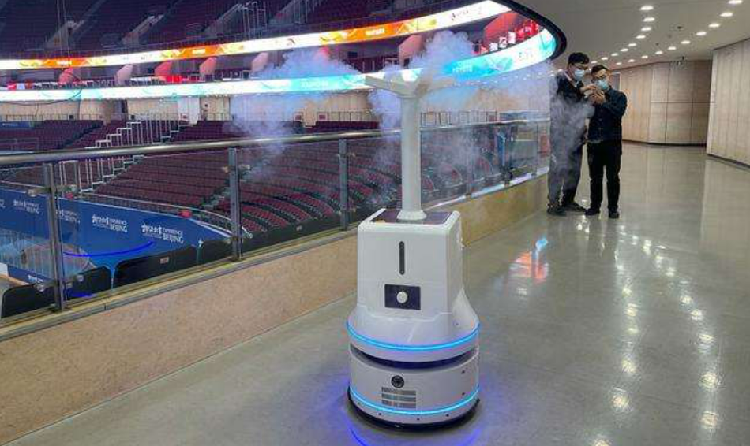
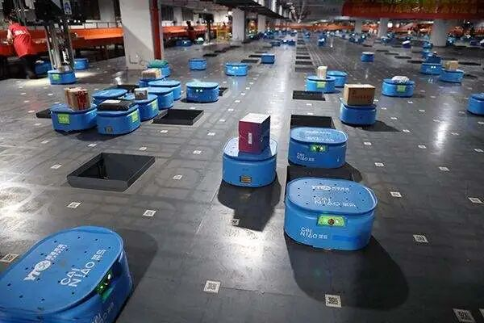

未来失业潮：人会被机器取代吗？

小镇把数字经济看得特别重，这不但是第四次产业革命，必将塑造继农业形态、工业形态之后的人类第三文明形态，还令人类真正触摸到现实以外的“看不见”的世界，围绕数字技术、数字经济，更是中美未来博弈的关键焦点。 相关的文章小镇已经写了20多篇了，后面会进行汇编。之所以写这么多就是因为这实在太重要了，我们每一个人未来如何工作、生活，甚至我们的思想理念等等都将被深刻影响，而现在才仅仅是刚刚开始，大多数人还有时间提前做好准备。 不久的未来，我们会不会被“人工智能”取代，不得不失业？ 这个问题，也是小镇每次写数字有关文章，一定会有人留言的问题。
小镇此前也做了一些简单的回应，比如会有替代性，但是也会创造更多就业，未来新的就业对于个人综合能力的要求会更高等等。 但对于一个影响到每一个人未来的至关重要的问题，如此说法实在太简单了，值得专门谈一谈。建议每个人都要好好读一下，包括自己的家人、朋友。
- 1 -
为什么数字技术会减少工作岗位，令很多人失业？ 小镇在《未来的全球大国，有且只有两个》《我们将要面对的未来世界》《什么是新基建：未来的大国基石》都提到：人类第四次产业革命是“智能时代”，就是由人工智能技术引发的，人工智能也是数字化的最终形态。 任何一次产业革命都会对全人类包括就业、人口、社会形态等等产生巨大变化，而数字技术由于其自身特点，其发展速度更快、颠覆性更强、影响也更加深刻。 在当下我们已经初步领教了，人工智能技术应用已经导致工作岗位减少，有相当多的劳动者被替代。
而由于不断变异的新冠病毒，导致新冠疫情反复、长期持续，普通劳动者一旦被感染将直接影响整个车间乃至整个工厂的生产，在一些领域，无人智能机械的应用已经打破了劳动者保住就业的抵抗，越来越多的机器人走上生产线。

现在整个机器人领域正在迎来超乎想象的历史机遇。2019年国内服务机器人的融资金额仅为54亿元，到2020年暴增到186亿元，而2021年更是飙升到440亿元。 越来越多的无人工厂加速出现。比如富士康早在2011年就提出了“百万机器人”计划，虽然因为技术不足未能如期完成，但已经改造完成的“黑灯工厂”减少员工超过90%。据2021年世界经济论坛的一份报告预测，到2025年机器人可能将取代8千万劳动力。 不仅仅在制造业，机器人对人工的替代也发生在服务业。
比如现在疫情防控，很多无人消杀、测温、配送机器人已经大量应用；刚刚闭幕的冬奥会上，处处都有机器人的身影，囊括引导、物流、炒菜、送餐、巡逻、收银甚至泡咖啡等等各个方面。

我们生活在互联网大爆发的时代，虽然互联网仅仅是数字时代的一小部分，但我们已经能够感受到相比过去任何一次技术创新，数字技术都具有既然不同的特性，更强烈的威胁到了劳动者的工作岗位。 比如通用性更强，可以应用到几乎所有的行业，从农业、工业、服务业到科研方方面面；又比如推广成本极低、更易被复制，无论是数据还是算法，都很容易就能被复制，典型的比如互联网公司，当有了一定规模，新增一个用户几乎不需要付出额外成本，这与传统行业截然不同；又比如可以自我学习、成长速度极快，典型的比如围棋机器人“AlphaGo”，其主要工作原理就是“深度学习”，已经彻底战胜了人类，但这仅仅是开始，“AlphaGo”的继任者“AlphaGo Zero”仅仅用了24小时就成为了世界级棋类大师。
一个人想要完成基本的教育，再在某一个领域完成基本学习，起码需要10到15年，如果要到达人类的边界，一般需要20年左右。而“人工智能”只要是它已经学会的、看到的、明白的东西，只会越来越快，更可以几乎零成本的复制。 何况人工智能在计算、存储、精准操作、长续航等等方面对人类拥有碾压优势，注定特别擅长处理重复、程序和规则性强的工作，比如技能型、事务型的工作，而这两类恰恰是吸收了最多就业人口的。 举个例子：原本困扰快递业的货品分拣，自从自动化分拣系统上线后，这个工作已经基本交给了机器人，而在快递分拣的基础上，如菜鸟公司还开始将技术应用在农业领域，已经在打造“无人粮仓”。

而随着人工智能技术进步，在深度学习支持下，图像识别、语音识别、机器翻译等能力显著增强，更是对一些原本有一定技能要求的岗位产生了替代。比如翻译、会计师、图形处理等等专业人士，虽然较为高端的领域或者存在法律责任问题的，仍然需要人工，但是占就业多数的中底层工作已经岌岌可危。 甚至包括一些很小众的职业，比如“速录员”。这个职业可能很多人没听说过，这个职业需要使用特制键盘和独特的输入方法，能够实现非常快速的文字输入。开会的时候除了录音还要安排速录员，这样可以在会议结束后第一时间拿到文字稿，无论给领导还是整理会议简报、留档都非常重要。
但是现在，不需要那么复杂，仅仅下载“科大讯飞”APP，一年花几百块钱，就可以精准完成语音转文字。小镇昨天还专门试了下，专门打开抽油烟机，放着录音进行采集，很精准。 同样的还有一些刚刚出现的职业，比如之前曾提到过的有声书配音师，才不过一两年，现在很多软件已经出现了，能够非常简单的就把文字转成声音，而且抑扬顿挫，听得出感情，虽然比能力更强的专业人员还差点，但是已经足够了，关键便宜、任劳任怨。很多短视频的配音实际上就是这些AI配音员，比如名叫“云溪”的AI声线只要看短视频的人多半就听到过。
- 2 -
什么才是未来的“铁饭碗”？
在替代的同时，新技术的发展也会创造就业岗位。 比如第一次产业革命，带动了铁路、采矿、纺织、机器制造等产业的发展，仅仅英国一个造船产业就在产业革命开始的前20年实现了就业翻倍；第二次产业革命，带来了汽车、电力、冶金等产业；第三次产业革命，出现了我们熟知的航天、电子、生物、海洋等等新产业，在越来越丰富的业态下，职业的分化也为服务业的大发展创造了基础，我们现在社会新增的大多数就业就来自于第三次产业革命。 数字这个第四次产业革命，也必然会带来更多就业岗位。 但有一个比较残忍的问题在于，与每一次变革类似的，新的就业岗位对人的要求必然更高，而哪怕现在的我们与200年前相比，在智力、身体结构各个方面并没有多大变化，这也就意味着，我们当代人需要满足的就业门槛越来越高，而我们学习成长速度并没多大变化。
更加严峻的是，相比前三次产业革命，好歹还有大量基础工作，比如无论是航天、汽车还是采矿，机器再怎么发展，终归还是要人去手动操作，这种操作绝大多数是重复的、标准化的，一个人只需要一段时间的专门培训就足以满足要求。 比如著名的学习挖掘机等技术的“蓝翔技校”。小镇在《我们将要面对的未来世界》也提到过，在5G和智能技术支持下，一些矿场已经开始使用无人挖掘和运输；现在中国道路货运从业人员就有1700多万人，他们承载起来中国各个地方的生产生活，工作强度非常大，尤其在疫情下更是遭受诸多不便。
但残酷的是，随着无人驾驶技术和法律规制的突破，在高速道路等相对规范、封闭的环境，无人货运很可能将成为最先实现无人驾驶的领域，或者可以采取“人+机器”的过渡模式，这也必然会明显减少对货车司机的需求。 可以直接取代人，这是过去从来没遇到过的。 虽然人工智能目前还仅仅处于“弱人工智能”的起步阶段，距离“强人工智能”以及最终的“超人工智能”还有非常遥远的距离，但对相当多人类单一功能的替代必将在不远的未来成为可能。 能够确定在可见未来不会被取代的，一定是更加复杂、全面、综合的能力，以及对应这些能力要求的工作岗位。 这就要求未来的劳动者需要具备更加高端的技能，要么是更加精深、专注的专业能力，以至于普遍的人工智能难以企及，比如记账对账会被取代，但是能够帮助企业融资上市的不会；又或者更具有创造力和情感，这些领域很可能是人类的人工智能永远无法企及的领域；再或者与人打交道的沟通合作、理解能力。
归根到底，简单、具体、常规的脑力劳动还有大量体力劳动，将会在人工智能的冲击下贬值；唯有兼具科学素养和人文素养的人才算得上拿到了“铁饭碗”。
- 3 -
为什么中国并不太紧张人口下降？ 小镇在去年7普数据刚刚出来的时候就说，我们未来面临的老龄化和人口危机确实紧迫，但是在短期刺激人口生育并不是多么优先的事情，当时小镇只是从人口角度进行了解读。 数字技术、数字经济的发展，更是关键中的关键。 中国现在人口确实多，不算港澳台也有14亿多人口，这几年中国教育水平提高很快，越来越多的人口接受了更完善的教育，比如中国人口平均受教育年限在2017年已经增至9.21年，可以说人均完成了9年义务教育。
但是这个标准顶多算是第三次产业革命时期的水平，美国早在2000年平均受教育年限就达到了14.7年，按照一般教育看相当于人均完成了专科以上教育。 中国和美国还差得远。 虽然我们今年应届毕业生首次突破1000万人，但是接受过高等教育（包括大专）的人口也不过才2亿多人而已，北京高等教育人口比例也才刚突破40%，更不要说硕士生了。 何况中国的教育体系还原不完善，相当数量的高等院校以及大量专业简直就是“误人子弟”；教育和就业距离太远，更不要说自主创新能力的不足。
中国目前多数人从事的工作，本质都属于能够被人工智能和机器人进行一定替代的工作，中国现在就是很难受的处于劳动者不足与过剩的尴尬境地。 这还仅仅是基本的教育，不要忘了上面提到过未来的真正“铁饭碗”要求的是兼具科学素养和人文素养，有多少人认为自己已经具备了？还有多少人受过去老一辈经验影响，早早的就放弃了继续学习，在30岁左右已经开始退化？ 这种未来的就业压力，很多人已经模糊的感受到了，典型的就是对自己的孩子看的越来越金贵，投入大量资金、时间、精力以提高自己后代的质量。
一个人或者一个家庭，拥有的资金、时间、精力、感情都是有限的，一个符合未来要求的孩子占用的更多，又哪里有空余生第二个孩子？一般性的鼓励生育政策、多给点补贴又或者给“全职太太（丈夫）”社保资格等等，都不足以真正逆转人口的减少。 这才是我们面对的真正未来。
- 4 -
怎么办？ 小镇一直希望能带动更多人提高“认知”，认知对个人基本不会有立竿见影的作用，更多是潜移默化需要几年才能看出来不同的，但必将是未来人与人的关键差别。 比如对未来、国家、大势的认知，了解未来是怎样的，提前布局；比如以小镇自己的例子和感受分享如何面对未来形成有竞争力的终身能力；又比如面对纷杂的社会和网络环境，如何辨别真伪，抓住真实的东西；又或者最直白的，如何理解政策、长期学习等等。 每一次产业革命，都是人类社会的大变局，一定有人沉沦、有人泯然、有人青云直上。 虽然人工智能来势汹汹，但好在仍然比较初级，更不要说面临利益、社会、法律、理念等重重束缚和阻挡，变化一定是逐步的，对于经济社会的影响仍然是局部的、有限的。
这就给有心人提供了机会窗口，该怎么做应该大体有数了，剩下的就是行动起来，不要觉得自己年龄大了，最关键的“认知能力”起码要到50岁才会开始显著退化，每个人的努力远远没有达到极限。 可以感悟下这12个字：人之为人、何以为人、人将何为？
其他文章推荐
■ 中央部委公务员的待遇与发展
如果喜欢，还请点赞、“在看”和关注吧 欢迎分享，让更多人发现“大树乡谈”